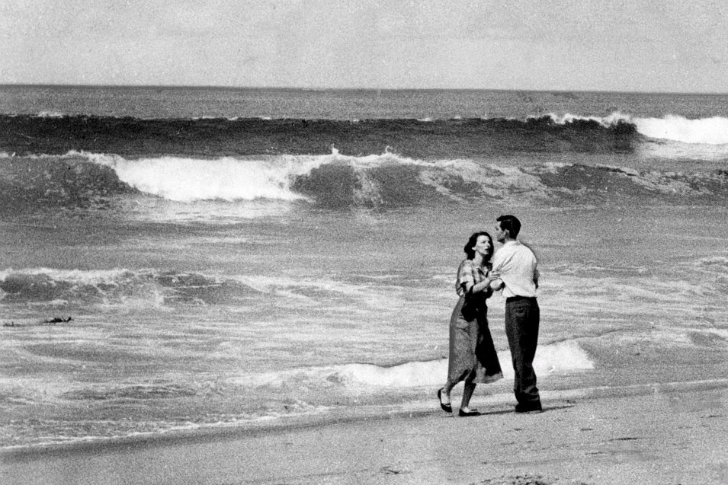

John L. Gaunt tarafından çekilen ve Los Angeles Times tarafından Denizde Trajedi olarak isimlendirilen fotoğrafta genç bir çift küçük oğullarını sadece birkaç dakika önce öfkeli deniz dalgalarına teslim etmişti. Bu fotoğraf, 1955 yılı Pulitzer Fotoğrafçılık Ödülü’nü John L.Gaunt’a kazandırdı.
